E-Mail-Konto einrichten
- Assistenten starten
- Wenn du Thunderbird bereits verwendet hast,
Lokale Ordner+Neues Konto erstellen:+E-Mail
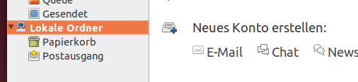
- Wenn du Thunderbird bereits verwendet hast,
- Bestehende E-Mail-Adresse einrichten
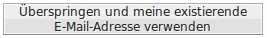 - Persönliche Angaben eintragen

- Klick auf den Button Manuell Bearbeiten

- Konfigurieren des HSR E-Mail Servers
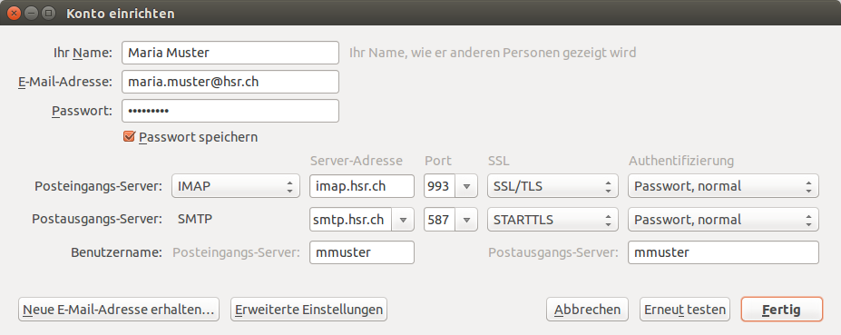
{kind=link}
{kind=link}
{kind=link}
HSR Adressbuch
Manchmal kann es nützlich sein, E-Mail Adressen im HSR-Adressbuch zu suchen.
Wichtiger Hinweis: Das Adressbuch funktioniert nur, wenn du im HSR-WLAN bist oder via VPN verbunden bist.
- Thunderbird starten und auf das
Adressbuch-Symbol klicken 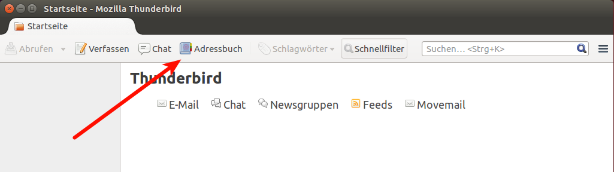 - Neues Adressbuch erstellen über das Menu
NeuLDAP-Verzeichnis...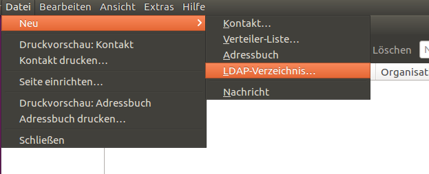 Verbindungsdaten eingeben. Im Bind-DN musst du
mmustermit deinem Benutzernamen ersetzen.Einstellung Wert Name HSR AdressbuchServeradresse hsr.chBasis-DN OU=HSR,OU=FH_Users,DC=hsr,DC=chPort-Nummer 389Bind-DN CN=mmuster,OU=Stud,OU=HSR,OU=FH_Users,DC=hsr,DC=chMit Klick auf
OKbestätigen.Du kannst nun im Suchfeld oben links nach einer Person suchen (Name, Kürzel usw.).
Du wirst nach deinem HSR-Kennwort gefragt. 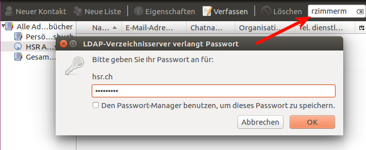Die Suchresultate tauchen nun auf! 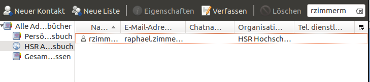
{kind=link}
{kind=link}
{kind=link}
{kind=link}
{kind=link}
Um nun eine E-Mail an einen HSR-Kontakt zu senden, kannst du wie folgt vorgehen:
{kind=link}
{kind=link}
Kalender
Kalender-Funktionalität wird in Thunderbird durch die Erweiterung Lightning bereitgestellt. Bei manchen Thunderbird-Versionen ist diese bereits integriert.
Lightning installieren
Falls dein Thunderbird Lightning noch nicht dabei hat:
Ubuntu-Paket xul-ext-lightning jetzt installieren
oder folge der Anleitung von Thunderbird um die Erweiterung manuell herunterzuladen und in deinem Thunderbird-Profil zu installieren.
Persönlichem HSR-Kalender in Lightning
Exchange-Unterstützung für Lightning installieren:
- im Browser die Release-Liste der ExchangeCalendar-Erweiterung öffnen
- in Thunderbird den Add-On-Manager öffnen 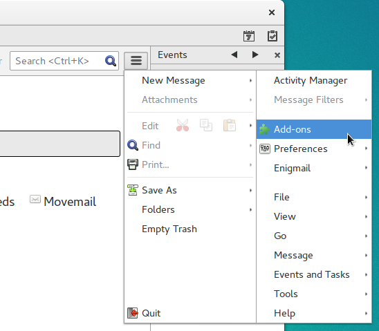
- Browser-Fenster und Thunderbird-Fenster nebeneinander platzieren
exchangecalendar-vX.Y.Z.xpi-Link des neusten Releases in den dunkgelgrauen Navigationsbereich des Add-On-Managers ziehen und dort loslassen (Drag & Drop) 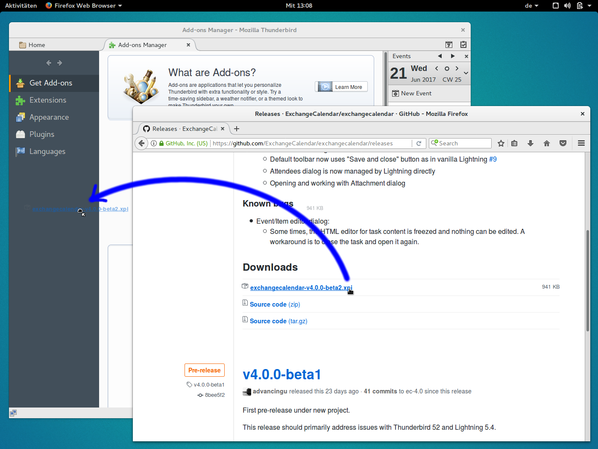- Warten bis der Install-Knopf verfügbar wird und diesen dann klicken 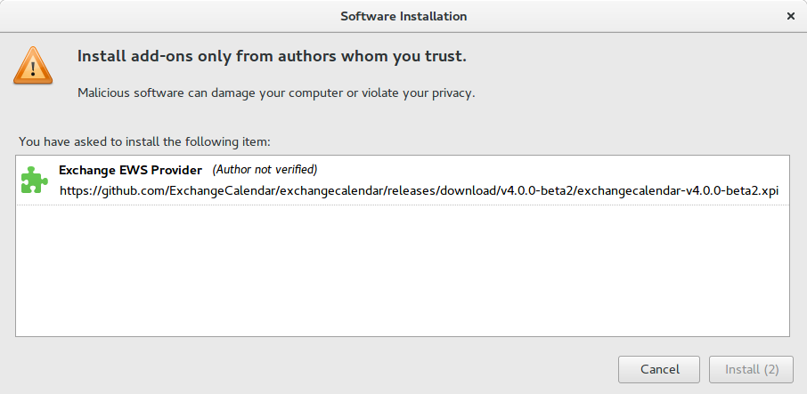
- Thunderbird neu starten

{kind=link}
{kind=link}
{kind=link}
Mit Exchange-Kalender verbinden:
- In Thunderbird auf Kalender-Tab gehen 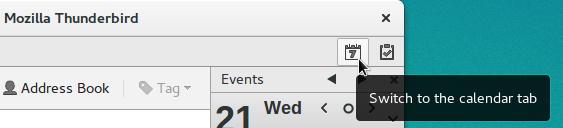
- Im Kontextmenu der Kalender-Übersicht links: New Callendar... 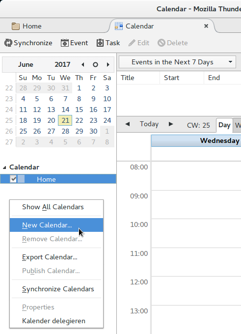
- Option On the Network wählen und Next klicken 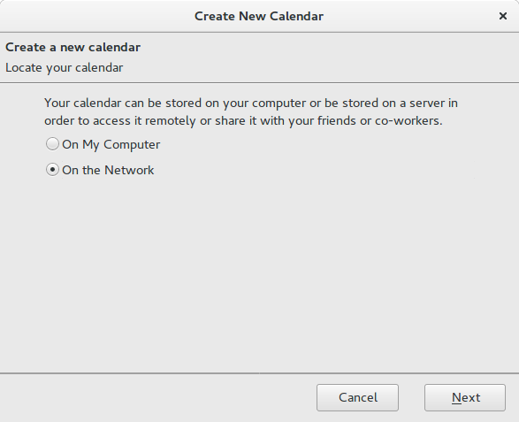
- Format
Microsoft Exchange 2007/2010/2013wählen und Next klicken 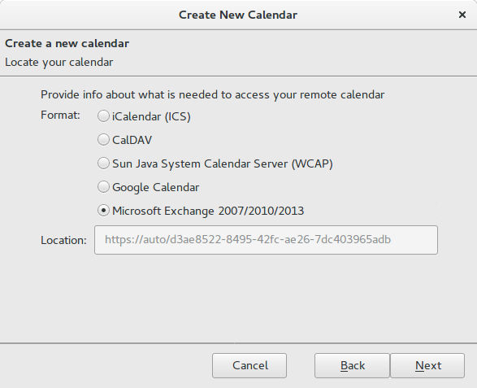 - Gewünschten Kalender-Name (z.B.
HSR) eingeben, falls gewünscht Kalender-Farbe wählen (praktisch bei mehreren Kalendern) und Next klicken 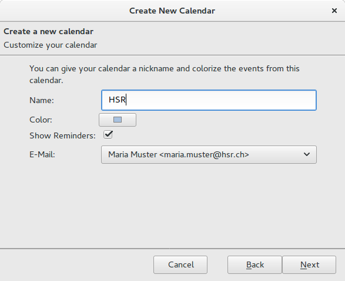 Folgende Einstellungen machen:
Einstellung Wert Exchange Type Hosted Exchange Server URL https://webmail.hsr.ch/ews/exchange.asmxPrimary email address: lange HSR-Email-Adresse ( vorname.nachname@hsr.ch) z.B.maria.muster@hsr.chUsername: kurze HSR-Email-Adresse ( username@hsr.ch) z.B.mmuster@hsr.chDomain name: (leer lassen) Share Folder Id: (leer lassen) und Check server and mailbox klicken 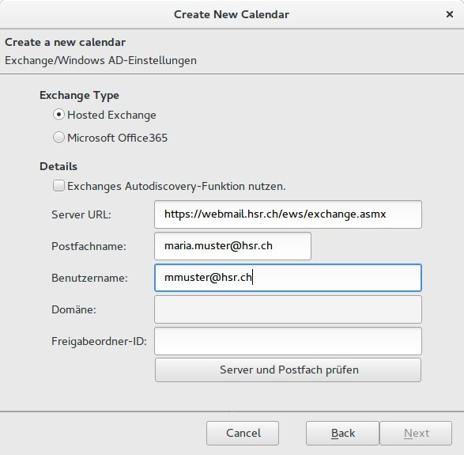
HSR-Passwort eingeben und Use Password Manager to remember this password. ankreuzen 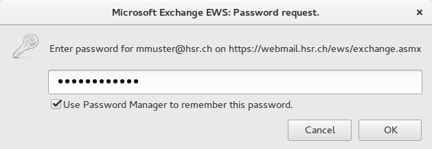
Die zusätzlich erscheinenden Einstellungen belassen:
Einstellung Wert Folder base Calendar folder Path below folder base /und next klicken 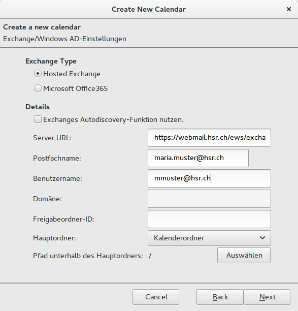
Finish klicken 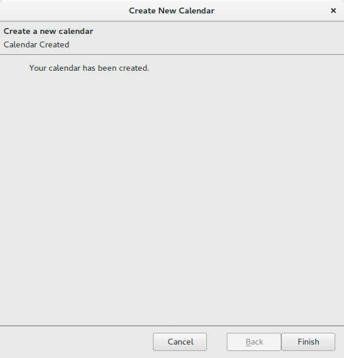
{kind=link}
{kind=link}
{kind=link}
{kind=link}
{kind=link}
{kind=link}
{kind=link}
{kind=link}
{kind=link}